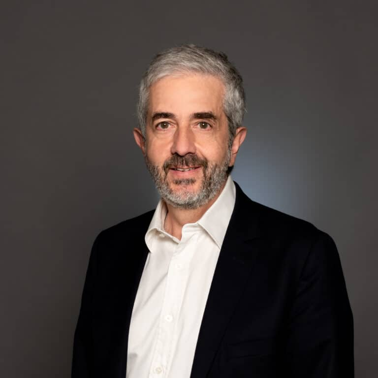

Etienne Pernot
Directeur recherche et valorisation
Ingénieur de l’École Polytechnique, ingénieur de Télécom Paris, diplômé d’un master en astrophysique de Sorbonne Université et docteur en mathématiques appliquées de l’université Paris-Dauphine. Il rejoint l'Efrei en septembre 2021 et dirige l'Efrei Reserach Lab
Ziad Adem
Directeur des études du cycle L / Enseignant-chercheur de l’axe de recherche « Données et Intelligence Artificielle »
Diplômé d’un master en physique des matériaux et composants électroniques en 2004, il a effectué son stage à l’Université Pierre et Marie Curie en France. En 2008, il obtient son doctorat à l’Université Pierre et Marie Curie (Sorbonne Université) portant sur la diffusion de molécules dans les matériaux poreux par RMN. Il rejoint l’Efrei en 2019.
Anonyme
biographie
Face à l’essor du Big Data, l’Efrei Research Lab explore les méthodes de traitement et d’exploitation des données. Le laboratoire s’intéresse aussi à la Web Intelligence, un domaine qui combine IA, fouille de données, agents intelligents et réseaux sociaux pour analyser les impacts des technologies numériques.
Activité de recherche :
Les TIC favorisent l’émergence de modèles économiques collaboratifs (marchés virtuels, crowdfunding…) qui stimulent innovation et réduction des coûts. Mais le manque de confiance et les enjeux de sécurité freinent encore leur adoption par de nombreuses organisations
Activité de recherche :
Avec l’essor de l’IA et des technologies cognitives, les systèmes embarqués deviennent communicants et intelligents, intégrant des services d’assistance et des environnements adaptatifs (détection, reconnaissance de l’utilisateur, suivi de l’état). L’objectif est de concevoir des systèmes électroniques capables d’exploiter des signaux complexes (5G, WiFi, capteurs…) pour analyser le contexte et répondre aux besoins des utilisateurs.
Activité de recherche :
La 5G ouvre la voie à de nouveaux services (eMBB, mMTC, URLLC) grâce au découpage de réseau, qui permet d’adapter l’infrastructure aux besoins spécifiques des entreprises, de l’industrie ou du divertissement. L’Efrei Research Lab développe des approches innovantes pour garantir qualité de service, sécurité et flexibilité, afin de soutenir des usages stratégiques comme l’e-santé, les véhicules intelligents ou les villes connectées.
Activité de recherche :
Le projet FARMBIRD vise à développer des outils innovants pour le suivi des populations d’oiseaux des champs. Ces espèces témoignent de la santé des écosystèmes agricoles et sont en déclins depuis quarante ans. Leur surveillance s’appuiera sur des technologies avancées telles que les drones, l’imagerie satellite et l’intelligence artificielle.
L’objectif final du projet est de faciliter les prises de décisions des politiques publiques et de soutenir la mise en place de plans de gestion stratégique adaptés à ces écosystèmes.
STREAMédia développe un modèle d’IA multimodal pour analyser les genres des vidéos politiques issues de la télévision et des plateformes numériques. Le projet explore l’hypothèse d’une informalisation croissante des contenus politiques.
CryptHO-Santé conçoit des solutions de cryptographie homomorphe légère pour sécuriser les données médicales dans des systèmes de santé intelligents et fédérés. L’objectif est de faciliter un diagnostic médical à distance fiable et accessible au Liban.